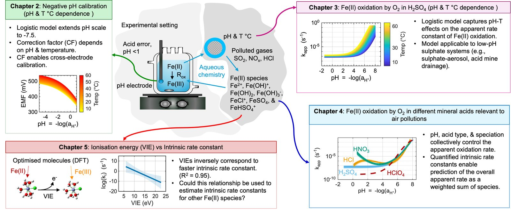

Thesis overview
From negative-pH calibration to Fe(II) oxidation kinetics, ligand effects and DFT-derived ionisation energies.
The oxidation of ferrous iron by dissolved oxygen is one of the most pH-sensitive reactions in environmental chemistry, and it controls how much iron stays soluble and bioavailable in acidic atmospheric aerosol. Yet the rate laws available for very acidic, sulphate-rich conditions disagreed with one another, partly because glass pH electrodes misread strongly acidic solutions. My thesis tackled both problems: first building a way to measure pH reliably below zero, then using it to measure and model Fe(II) oxidation across the full range of acidity, temperature and chemical speciation found in polluted air.

Aim
To quantify the co-dependencies of pH, temperature and speciation on iron(II) oxidation kinetics in oxygenated acidic aqueous solutions, with implications for environmental processes and with the goal of improving analytical techniques for negative-pH measurement.
Objectives
- 1Develop a negative-pH calibration method
Develop and validate a nonlinear, temperature-dependent calibration for glass electrodes that corrects the acid error and extends reliable measurement down to pH −7.5 (Chapter 2).
- 2Quantify pH and temperature effects in sulphuric acid
Formulate an empirically constrained, pH- and temperature-dependent kinetic model for Fe(II) oxidation in sulphate media representative of atmospheric sulphate aerosol (Chapter 3).
- 3Evaluate the influence of inorganic ligands
Investigate how chloride, nitrate and sulphate alter Fe(II) oxidation across acidic systems relevant to polluted aerosol, and quantify species-specific intrinsic rate constants (Chapter 4).
- 4Link electronic structure to reactivity
Use density functional theory to compute ionisation energies of the major Fe(II) species and correlate them with the experimentally derived intrinsic rate constants (Chapter 5).
- 5Assess the environmental implications
Integrate the experimental and computational findings to model Fe(II) oxidation as a function of pH and temperature under representative sulphate-aerosol conditions, and evaluate the consequences for iron bioavailability and atmospheric transport (Chapter 6).
Publications from the thesis
- Saleesongsom, S., Weiss, D., & Plancherel, Y. (2026). Temperature-dependent nonlinear calibration of glass pH electrodes for negative pH applications. ACS Omega, 11(27), 40120–40133. 10.1021/acsomega.6c01903
- Saleesongsom, S., Bullen, J., Kafizas, A., Weiss, D., & Plancherel, Y. A coupled pH–temperature logistic rate law for Fe(II) oxidation by O2 in sulphuric acid media (pH −1.5 to 8.0; 5 to 65 °C) and its implications for sulphate-rich waters. For Environmental Science & Technology.in preparation
- Saleesongsom, S., Hunt, P., Plancherel, Y., & Weiss, D. An integrated experimental–computational framework for pH- and ligand-controlled Fe(II) oxidation kinetics across multiple acid systems at 25 °C. For Geochimica et Cosmochimica Acta.in preparation